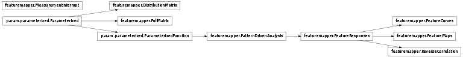

FeatureResponses and associated functions and classes.
These classes implement map and tuning curve measurement based on measuring responses while varying features of an input pattern.
Bases: param.parameterized.Parameterized
Maintains a matrix of Distributions (each of which is a dictionary of (feature value: activity) pairs).
The matrix contains one Distribution for each unit in a rectangular matrix (given by the matrix_shape constructor argument). The contents of each Distribution can be updated for a given bin value all at once by providing a matrix of new values to update().
The results can then be accessed as a matrix of weighted averages (which can be used as a preference map) and/or a selectivity map (which measures the peakedness of each distribution).
Bases: param.parameterized.Parameterized
Records the output of every unit in a sheet, for every combination of feature values. Useful for collecting data for later analysis while presenting many input patterns.
Bases: featuremapper.PatternDrivenAnalysis
Systematically vary input pattern feature values and collate the responses.
A DistributionMatrix for each measurement source and feature is created. The DistributionMatrix stores the distribution of activity values for that feature. For instance, if the features to be tested are orientation and phase, we will create a DistributionMatrix for orientation and a DistributionMatrix for phase for each measurement source. The orientation and phase of the input are then systematically varied (when measure_responses is called), and the responses of all units from a measurement source to each pattern are collected into the DistributionMatrix.
The resulting data can then be used to plot feature maps and tuning curves, or for similar types of feature-based analyses.
Bases: featuremapper.FeatureResponses
Calculate the receptive fields for all neurons using reverse correlation.
param Boolean continue_measurement (allow_None=False, bounds=(0, 1), constant=False, default=True, instantiate=False, pickle_default_value=True, precedence=None, readonly=False)
Bases: featuremapper.FeatureResponses
Measure and collect the responses to a set of features, for calculating feature maps.
For each feature and each measurement source, the results are stored as a preference matrix and selectivity matrix in the sheet’s sheet_views; these can then be plotted as preference or selectivity maps.
Bases: featuremapper.FeatureResponses
Measures and collects the responses to a set of features, for calculating tuning and similar curves.
These curves represent the response of a measurement source to patterns that are controlled by a set of features. This class can collect data for multiple curves, each with the same x axis. The x axis represents the main feature value that is being varied, such as orientation. Other feature values can also be varied, such as contrast, which will result in multiple curves (one per unique combination of other feature values).
A particular set of patterns is constructed using a user-specified pattern_generator by adding the parameters determining the curve (curve_param_dict) to a static list of parameters (param_dict), and then varying the specified set of features. The input patterns will then be passed to the pattern_response_fn, which should return the measured responses for each of the requested sheets. Once the responses to all feature permutations has been accumulated, the measured curves are passed to the storage_fn and are finally returned.
Bases: dataviews.ndmapping.Dimension
Specifies several parameters required for generating a map of one input feature.
param String format_string (allow_None=False, constant=False, default={name} = {val}{unit}, instantiate=False, pickle_default_value=True, precedence=None, readonly=False)